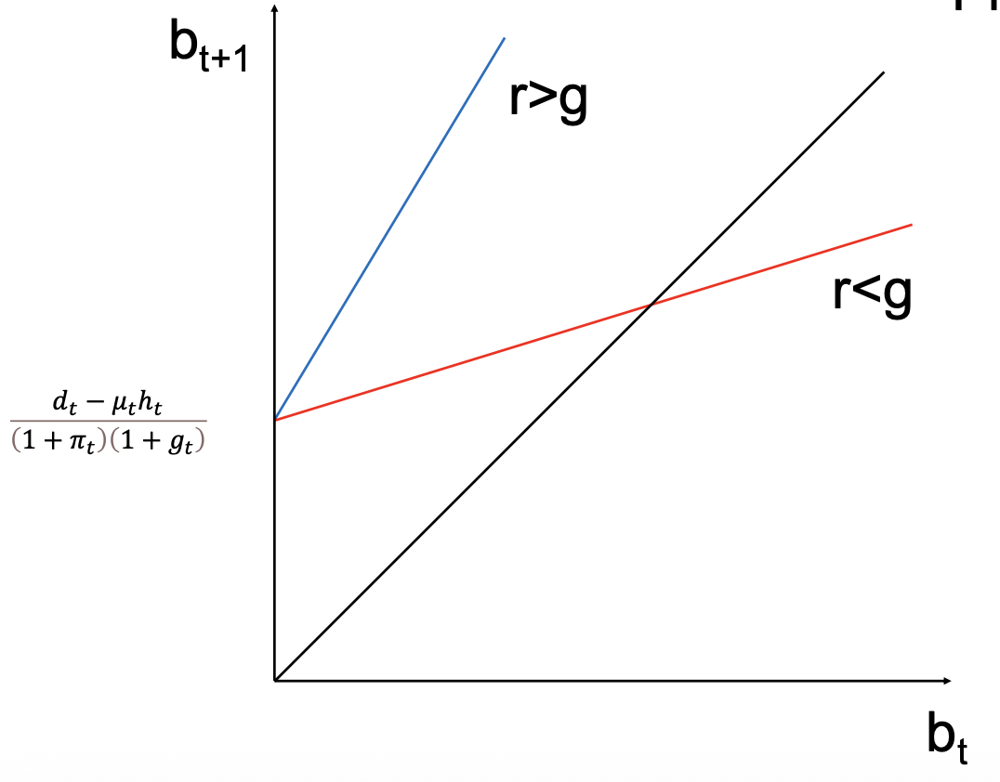
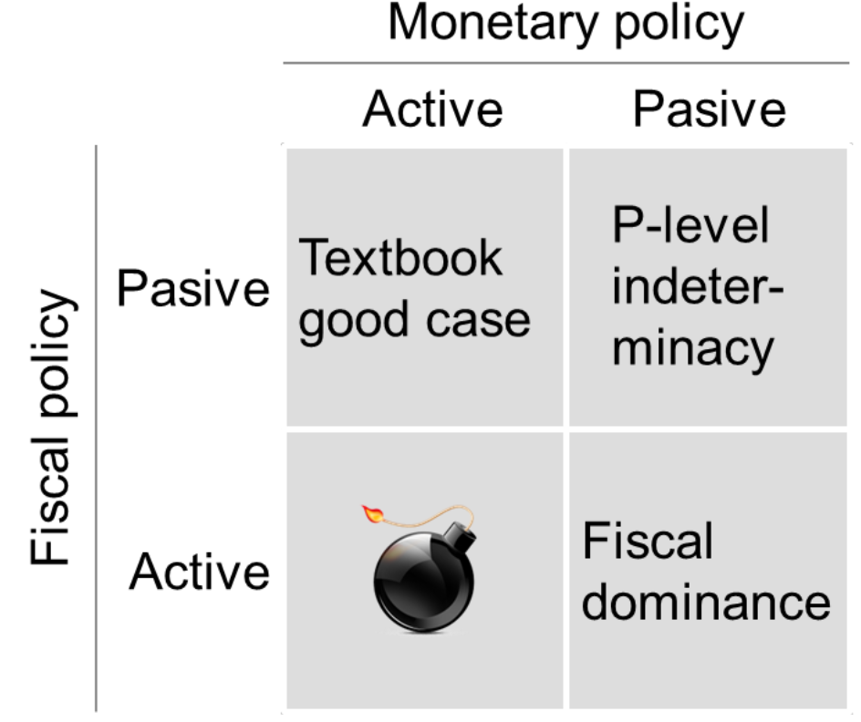

3.1 — Fiscal Dominance
Chapter 3: Fiscal-Monetary Policy Nexus
What is Fiscal Dominance?
Fiscal dominance arises when a country's fiscal policy (government spending and borrowing) dictates or constrains its monetary policy (central bank actions), often compromising the central bank's ability to manage inflation and ensure price stability.
In summary, the fiscal dominance problem reflects a situation where government debt pressures compel central banks to prioritize fiscal needs over monetary policy goals, potentially fueling inflation and undermining economic stability.
In a well-functioning economy, the central bank sets interest rates independently to control inflation, while the government manages its spending and revenue responsibly. Fiscal dominance breaks this arrangement: the government's excessive spending or borrowing leaves the central bank with no choice but to accommodate — typically by printing money (monetization) or keeping interest rates artificially low — to prevent a debt crisis.
This is one of the most important concepts in the intersection of monetary and fiscal policy, and it has direct, real-world implications: hyperinflation in Zimbabwe, the European debt crisis in 2010-2012, and even the recent post-Covid inflation spike can all be analyzed through the lens of fiscal dominance.
The Dynamic Budget Constraint
To understand fiscal dominance formally, we need the government's dynamic budget constraint — the equation that governs how public debt evolves over time.
$b_{t+1} = \frac{d_t - \mu_t h_t}{(1+\pi_t)(1+g_t)} + \frac{1+r_t}{1+g_t} b_t$
$\dot{b}_t \equiv d_t - \mu_t h_t + (r_t - g_t)b_t$
| Variable | Meaning |
|---|---|
| $b_t$ | Debt-to-GDP ratio at time $t$ |
| $d_t$ | Primary deficit (government spending minus revenue, excluding interest payments) |
| $\mu_t h_t$ | Seigniorage — revenue the central bank generates by printing money ($\mu_t$ = money growth rate, $h_t$ = monetary base / GDP) |
| $\pi_t$ | Inflation rate |
| $g_t$ | Real GDP growth rate |
| $r_t$ | Real interest rate on government debt |
The key insight is in the term $(r_t - g_t)$ — the difference between the real interest rate and the growth rate. This is the snowball effect:

📈 When $r > g$
The interest rate exceeds growth → the debt grows faster than the economy. This is the explosive path: even if the government balances its primary budget, the debt ratio rises relentlessly because interest payments compound faster than GDP grows.
Primary deficits must be covered by seigniorage to make the budget sustainable. Otherwise, the debt ratio follows an explosive path.
📉 When $r < g$
Growth exceeds the interest rate → the government faces a soft budget constraint. The debt ratio can stabilize even with primary deficits not covered by seigniorage, because GDP growth "dilutes" the existing debt.
This is the favorable scenario. Darby (1983) called it "Some Pleasant Monetarist Arithmetic" — in reality, $r < g$ often holds for extended periods.
The Four Policy Regimes
How do monetary policy and fiscal policy interact? Sargent & Wallace (1981), Leeper (1991), and Sims (1994) showed that the interaction between the two policies can be classified into four distinct regimes, depending on whether each policy is "active" (pursuing its own goals aggressively) or "passive" (adjusting to accommodate the other).

MP Active + FP Passive
The ideal regime in modern macroeconomics. The central bank actively pursues price stability by reacting sufficiently strongly to inflation (Taylor rule). Fiscal policy passively adjusts taxes and spending to ensure debt sustainability.
Result: stable inflation and sustainable debt. This is how most OECD countries aim to operate.
MP Passive + FP Active
Fiscal policy refuses to adjust taxes or spending. The government runs persistent deficits that are not financed entirely by future taxes. The central bank is forced to let the money stock respond (monetization) in order to achieve fiscal sustainability.
Result: inflation is determined by the fiscal position, not by monetary policy. The central bank loses control over prices.
MP Passive + FP Passive
Neither policy area takes the lead. Nobody anchors the price level. Multiple equilibria are possible, and inflation is indeterminate — the economy can drift to any price level without a stabilizing force.
MP Active + FP Active
Both policies try to control the economy simultaneously. The central bank raises rates to fight inflation while the government keeps spending. These contradictory signals create macroeconomic instability and potentially explosive dynamics.
For exams: know the 2×2 matrix by heart. The key distinction is between who adjusts: in the textbook case, fiscal policy adjusts to monetary policy; in fiscal dominance, monetary policy adjusts to fiscal policy. The other two corners (both passive, both active) produce pathological outcomes.
Why is Fiscal Dominance Bad?
Fiscal dominance is not merely a theoretical curiosity — it has caused some of the worst economic disasters in history. There are four major channels through which fiscal dominance damages the economy:
Hyperinflation — The Most Extreme Outcome
When the central bank must generate seigniorage to cover fiscal costs, this can — in extreme but historically quite common cases — generate hyperinflation (Cagan, 1956). A complete meltdown of the monetary system takes place: prices double every few days or weeks, the currency becomes worthless, and the economy reverts to barter.
Historical examples: Germany (1923), Zimbabwe (2008), Venezuela (2017-present), Hungary (1946 — the worst hyperinflation ever recorded).
Currency Crises
Fiscal dominance may undermine fixed exchange rate regimes and cause higher inflation as well as persistent declines in output. Krugman (1979) developed a model explaining the collapse of the Bretton-Woods system through fiscal dominance: the central bank wants to fix the exchange rate, but must also monetize government deficits. This leads to a gradual loss of foreign exchange reserves and an inevitable currency crisis.
| Central Bank Balance Sheet (Krugman Model) | |
|---|---|
| Assets | Liabilities |
| FX reserves ($e \cdot B_{F,t}$) | Monetary Base ($M_{0,t}$) |
| Government bonds ($B_{H,t}$) | |
As the central bank buys more government bonds (monetization), it must sell foreign reserves to keep the exchange rate fixed. When reserves run out → the peg collapses → currency crash.
Inability to Control Inflation — "Some Unpleasant Monetarist Arithmetic"
Sargent & Wallace (1981) showed a paradoxical result: in an economy where the quantity theory of money holds but monetary policy is dominated by fiscal needs (with $r > g$), lower money supply growth and inflation at present means higher inflation in the future.
Why? Because tighter money today means more government bonds are issued instead of being monetized → higher future debt → even more monetization needed later. And if money demand depends on expected inflation, lower money supply growth may even lead to higher inflation now, because people anticipate future monetization.
Self-Fulfilling Sovereign Debt Crises
Darby (1983) noted that $r < g$ often holds for long periods — "Some Pleasant Monetarist Arithmetic". But governments tend to over-rely on such favorable circumstances. Neither $g$ nor $r$ are fully in the government's hands:
- Growth could become negative during crisis times.
- If government debt exceeds some threshold, risk premiums increase, causing $r > g$.
- This triggers a self-fulfilling prophecy: investors fear default → they demand higher yields → higher yields worsen the debt dynamic → confirming the initial fear.
The Solution: Prohibition of Monetary Financing
How do modern economies prevent fiscal dominance? Through institutional design:
-
Central bank independence
Central banks must be independent from the government — both politically (no instructions from politicians) and financially (no dependence on government funding). They must have a clear mandate focused on price stability as their main goal.
-
Legal prohibition of monetary financing
The EU enshrines this in Article 123 TFEU (ex Art. 101 TEC): "Overdraft facilities or any other type of credit facility with the ECB or national central banks in favour of Union institutions, central governments, regional, local or other public authorities shall be prohibited, as shall the purchase directly from them of debt instruments."
-
Seigniorage as by-product, not policy tool
Seigniorage is treated as a welcome by-product helping to keep the central bank financially independent, but it is generally low (less than 0.3% of GDP, typically even lower) in a low-inflation environment.
Fiscal dominance = fiscal policy controls monetary policy. It arises when the government refuses to adjust its deficits and forces the central bank to monetize debt. The dynamic budget constraint shows that when $r > g$, this leads to explosive debt or inflation. The solution is institutional: independent central banks with a price stability mandate and a legal prohibition of monetary financing.